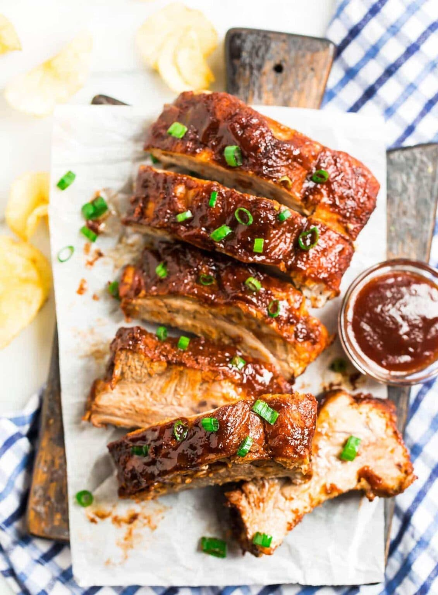

Instant Pot Ribs

Description
This is super simple, fast and delicious
Ingredients
- 1 pkg of back ribs
- 1/2 cup white vinegar
- 1 cup brown sugar
- 1 tsp paprika
- 1 tsp coriander
- 1 tsp of the other "c" spice, the name eludes me
- 1 cup barbeque sauce
- maybe some green onion
Steps
-
Set up instant pot with Vinegar in bottom.
-
Cut up ribs to size, mix rub and coat pieces.
-
Place in instant pot, cook on pressure cook for 20mins.
-
Remove ribs from Instant Pot. Place on baking sheet, coat with barbeque sauce
-
Get Sauced!
Back to top